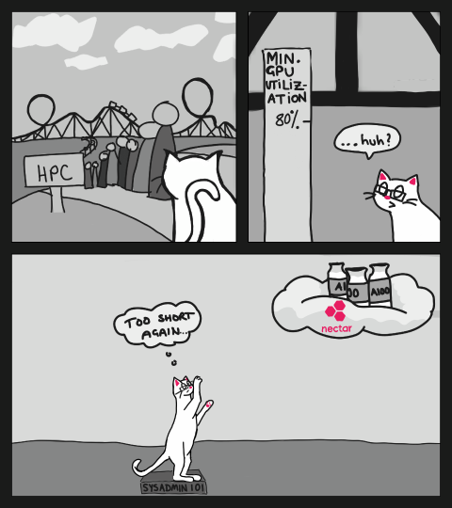

About
What is MLeRP?
Say we have a researcher who is a domain expert in a field and is just discovering that machine learning algorithms might be appropriate to accelerate their work.

They explore online for potential approaches and even find some tutorials that use interactive environments, but quickly discover that dealing with large datasets requires more compute than their laptop can handle so they need to move to a HPC system.

While desktop sessions are available they might have prohibitively long queues and have low utilisation of the underlying hardware. They could submit a job to the HPC queue but this leads to long times between iterations. At this stage the researcher is still discovering things about their data, how to clean it and how to analyse it.

They need an interactive environment so they can develop and debug their algorithms and the algorithms, but still need access to high powered acceleration so they can process their dataset. At the same time we want to improve utilisation of the hardware so that we can serve more users and reduce wait times.
MLeRP was built to be a middle ground that has the interactivity of a notebook with the power of a HPC environment that can share valuable resources between other users while code isn’t being executed.

Now our new researcher can easily import the same code that they were using on their laptops or with online notebook services straight into a HPC environment without the need to convert it first into a SBATCH script, wait in long HPC queues or load modules for dependencies.

MLeRP is split into two clusters which users can choose between - one based in Monash (Melbourne, Victoria) and one based in QCIF (Brisbane, Queensland). The clusters have seperate file systems, so you will have to transfer your files across if you’d like to switch regions.
Monash
Reference: https://docs.massive.org.au/M3/m3users.html#system-configuration
Total number of cores: X
Total number of GPU cores: X CUDA cores
Total memory: X TBytes
Storage capacity: X PBytes Lustre parallel file system
Network: X cards
Compute
| Name | Partition | Nodes | CPU Cores per node | Total CPU cores in partition | Memory per node (GB) | CPU Speed | Processor model | Codename |
|---|---|---|---|---|---|---|---|---|
| x | x | x | x | x | x | x | x | x |
GPU Compute
| Name | Partition | Nodes | CPU Cores per node | Total CPU cores in partition | Memory per node (GB) | Number of GPUs per node | Total GPUs in partition | GPU model | GPU cores per card | CPU Speed | Processor model | Codename |
|---|---|---|---|---|---|---|---|---|---|---|---|---|
| x | x | x | x | x | x | x | x | x | x | x | x | x |
Remote desktops through the CVL
I assume we cut this?
QCIF
Total number of cores: X
Total number of GPU cores: X CUDA cores
Total memory: X TBytes
Storage capacity: X PBytes Lustre parallel file system
Network: X cards
Compute
| Name | Partition | Nodes | CPU Cores per node | Total CPU cores in partition | Memory per node (GB) | CPU Speed | Processor model | Codename |
|---|---|---|---|---|---|---|---|---|
| x | x | x | x | x | x | x | x | x |
GPU Compute
| Name | Partition | Nodes | CPU Cores per node | Total CPU cores in partition | Memory per node (GB) | Number of GPUs per node | Total GPUs in partition | GPU model | GPU cores per card | CPU Speed | Processor model | Codename |
|---|---|---|---|---|---|---|---|---|---|---|---|---|
| x | x | x | x | x | x | x | x | x | x | x | x | x |
Remote desktops through the CVL
I assume we cut this?